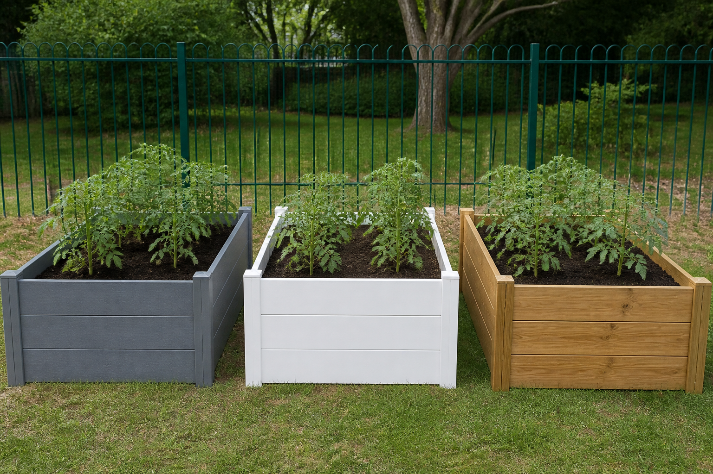

📌 Synthèse élève — Le bac du jardin : choisir son matériau
Six matériaux, six exigences, et une durée à choisir avant de nommer le gagnant.
🧠 Ce que je dois retenir
Trois matériaux passent toutes les exigences du bac. Sur quoi les classer, quand le moins cher à l'achat n'est pas le moins cher ?
Ce que dit le programme (4e, compétence C7, et C3 en appui) :
comparer différents matériaux pour choisir le plus adapté ;
comparer qualitativement et/ou quantitativement (incidences environnementales, bilan carbone, efficacité énergétique) plusieurs OST répondant au même besoin et arrêter un choix.

📍 L'objet : le même bac, en plastique recyclé, en PVC et en teck. Image générée par IA (Canva).
1. Un matériau peut-il être « le plus adapté » tout seul ?
Au jardin, le bac a six exigences, comme « résistance d'au moins 20 MPa (mégapascals) ». Six matériaux passent devant :
Pin non traité ✘Il rate trois seuils : le soleil, le sel et l'eau.
Pin traité autoclave ✘Il tient tout, sauf le recyclage : 20 % pour 40 % exigés.
Acier galvanisé ✘Deux motifs : l'eau (3 sur 5) et la masse (267 kg pour 60 admis).
Polypropylène (PP) recyclé, PVC, teck ✔Ils passent les six seuils. Il faut encore les classer.
🧠 À retenir : un matériau n'est pas adapté tout seul. Il l'est à des exigences écrites,
et chacune est un seuil : il passe ou il échoue. Pour un matériau recalé, tu nommes tous ses motifs.
⚠️ Le piège : croire qu'une très bonne valeur rattrape un seuil manqué. L'acier est le plus
résistant des six, et il reste recalé.
Au jardin, chaque seuil protège quelque chose. Les exigences ont trois origines :
Du siteÀ 900 m de la mer, le sel ronge. Dehors toute l'année, le soleil abîme.
De l'objetLa terre du bac reste humide : c'est le principe d'un jardin arrosé.
D'un engagementLe collège a voté : « il n'installe pas ce qu'il ne saura pas jeter ».
À Albany, à 200 km de la mer et à l'ombre, le sel et le soleil comptent moins. La terre reste humide :
le pin nu reste recalé, et le classement sur 15 ans ne change pas.
🧠 À retenir : déplacer le bac change seulement les exigences du site. Celles qui
viennent de l'objet restent. Un engagement voté s'écrit au cahier des charges, comme une contrainte physique.
⚠️ Le piège : croire qu'un engagement compte moins parce que rien ne casse si on l'oublie.
Il oblige le collège qui l'a voté.
3. Comment comparer honnêtement un prix et une durée de vie ?
Au jardin, les six matériaux font le même bac de 1,00 × 0,50 × 0,40 m : le même service rendu, ou
unité fonctionnelle. Le prix départage les trois retenus. Pour 15 ans de bac :
🧠 À retenir : pour comparer un prix et une durée, tu les ramènes à une seule grandeur :
le coût du même bac sur la même durée. Le nombre de bacs s'arrondit à l'entier supérieur.
⚠️ Le piège : diviser 15 par 6 et commander 2,5 bacs. Tu n'achètes pas un demi-bac : il en faut 3.
4. Pourquoi le classement change-t-il avec la durée ?
Au banc, tu changes la durée de comparaison. L'ordre des trois retenus se retourne deux fois :
Sur 4 ansPP 90 €, PVC 167 €, teck 309 €. C'est l'ordre des prix d'achat.
Sur 15 ansPP 271 €, teck 309 €, PVC 333 €. Le PVC est acheté deux fois.
Sur 20 ansPP 362 €, PVC 500 €, teck 619 €. Il faut un second teck.
🧠 À retenir : un classement de coûts dépend de la durée choisie.
Cette durée est une décision : tu l'écris avant de nommer le gagnant, par exemple « sur 15 ans,
durée d'amortissement du collège ».
⚠️ Le piège : croire que durer longtemps est toujours un avantage. Pour 20 ans, deux tecks font
30 années payées pour 20 utilisées.
Le prix ne compte que la matière achetée. Chaque bac parcourt pourtant les cinq étapes de son
cycle de vie :
1. ExtractionLe teck vient d'une forêt tropicale, souvent à 10 000 km.
2. Fabrication3 bacs en PP sur 15 ans : 3 fabrications.
3. DistributionEt 3 transports, contre un seul pour le teck.
4. UtilisationUn bac ne consomme rien : cette étape pèse peu.
5. Fin de vieLe pin traité autoclave n'est recyclable qu'à 20 %.
Un bac réparable évite des fabrications : changer une paroi coûte bien moins qu'un bac entier, en
euros et en matière.
🧠 À retenir : chaque remplacement rejoue les cinq étapes du cycle de vie. Un
bilan carbone additionne les gaz à effet de serre de toutes ces étapes, pas seulement de l'usage.
⚠️ Le piège : croire qu'un matériau très recyclable est forcément le meilleur pour
l'environnement. Trois bacs recyclables, ce sont trois fabrications : le calcul reste à faire.
Au jardin, l'intendance attend une note. Par exemple : « Sur 15 ans, durée d'amortissement du collège,
nous retenons le polypropylène recyclé : 271 €. » Une bonne note contient :
La durée retenueSans elle, personne ne peut refaire le calcul.
Le gagnant et son critèreIci, c'est le coût sur 15 ans qui tranche.
Ce qui n'est pas comptéNi le transport, ni l'énergie de fabrication, ni l'origine du bois.
D'où viennent les nombresLes durées de vie sortent d'essais : sous quel climat ?
« 271 € contre 309 € » est quantitatif : des nombres. « Le teck vieillit joliment »
est qualitatif : un constat. Les deux se disent, chacun sous son nom. Le cahier des charges porte
deux piliers du développement durable, l'environnement et l'économie. Le troisième, le social, n'y figure pas.
🧠 À retenir : arrêter un choix, c'est trancher et dire sur quel critère. Un
dossier honnête écrit aussi ce qu'il ne mesure pas.
⚠️ Le piège : rendre le tableau des six matériaux en guise de conclusion. Un tableau ne
tranche pas : c'est à toi de le faire.
📖 Les mots de la séquence
cahier des charges — specifications
la liste écrite de ce que l'objet doit tenir.
exigence — requirement
une ligne du cahier des charges, avec son seuil.
seuil — threshold
la valeur à atteindre : l'objet la passe ou non.
critère — criterion
ce qui sert à comparer, comme le coût sur 15 ans.
PP — polypropylene
le polypropylène, un plastique ; ici, recyclé.
PVC — PVC
un plastique rigide, le polychlorure de vinyle.
recyclabilité — recyclability
la part de matière qu'une filière sait recycler.
traitement autoclave — pressure treatment
un produit qui protège le bois de la terre humide.
prix d'achat — purchase price
la somme payée une fois, à l'achat.
coût global — life-cycle cost
tous les achats sur la durée choisie.
durée de vie — service life
le temps qu'un bac tient avant d'être remplacé.
amortissement — depreciation
la durée sur laquelle le collège répartit une dépense.
unité fonctionnelle — functional unit
le même service rendu, pendant la même durée.
cycle de vie — life cycle
les cinq étapes, de l'extraction à la fin de vie.
bilan carbone — carbon footprint
les gaz à effet de serre de toutes ces étapes.
quantitatif — quantitative
appuyé sur des nombres mesurés.
qualitatif — qualitative
appuyé sur des constats décrits, sans nombre.
réparable — repairable
qui se répare en changeant une pièce, pas l'objet entier.